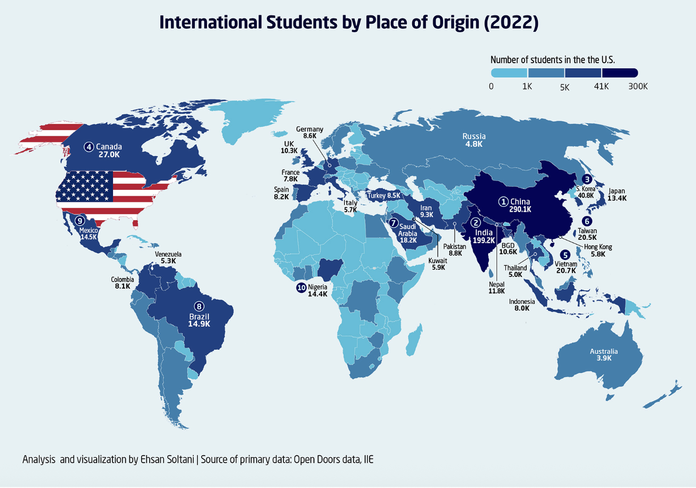
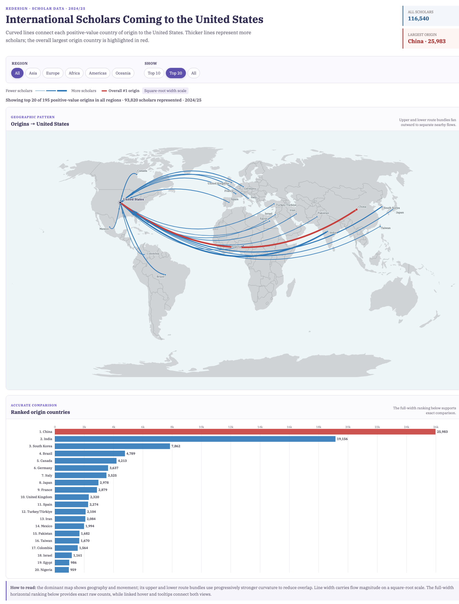

The original uses a world choropleth to show the number of international students enrolled in the United States by place of origin. Four binned blue shades encode magnitude, while selected countries receive labels and the ten largest receive rank markers.
Important distinction: the available redesign file is not this student dataset. It reports international scholars on nonimmigrant visas who undertake temporary academic activities and are not enrolled as students.

Figure 1. The 2022 student visualization selected for critique. Source: Visual Capitalist; primary data: IIE Open Doors.
Redesign · scholar data · 2024/25
International Scholars Coming to the United States
Curved lines connect each positive-value country of origin to the United States. Thicker, darker-blue lines represent more scholars; the overall largest origin country is highlighted in red.
Within each region, routes alternate down and up while later routes bend farther.
Loading world map…
Accurate comparison
Ranked origin countries
The full-width ranking below supports exact comparison.
Loading rankings…
How to read: the dominant map shows geography and movement. Within each region, routes alternate downward and upward with progressively stronger curvature to reduce overlap. Line width is the primary magnitude encoding: thicker routes represent more scholars, while subtly darker blue reinforces larger values. The overall largest origin is red. The full-width horizontal ranking below provides exact raw counts, while linked hover and tooltips connect both views.
Visual Capitalist’s “International Students by Place of Origin (2022)” uses IIE Open Doors data to map the origins of 948,519 international students enrolled at U.S. colleges and universities. It fills countries with four blue ranges, directly labels selected values, and ranks the ten largest origins. This redesign necessarily uses a different Open Doors file: 116,540 international scholars in 2024/25. Open Doors defines these scholars as people on nonimmigrant visas engaged in temporary academic activities who are not enrolled as students. The populations and years therefore remain explicitly separate; numerical differences between the figures are not effects of the redesign.
Intended Message, Audience, and Tasks
The original communicates where international students in the United States come from, which countries contribute the most, and how origins cluster geographically. Its likely audience includes the general public, prospective students, educators, and higher-education readers. Viewers should be able to identify leading countries and outliers, compare counts, locate origins, and recognize regional patterns.
Strengths
First, a world map gives immediate geographic context. A viewer can locate origins and see the concentration in Asia without translating country names into locations. Second, sequential color is conceptually ordered and appropriate for magnitude. Direct labels provide exact values for selected countries, while numbered markers make the largest contributors quickly discoverable. The strong title, restrained palette, and visual prominence of China and India establish a clear hierarchy.
Weaknesses
The choropleth leaves the origin-to-destination relationship implicit: colored countries show “where,” but no mark expresses movement toward the United States. Because the story concerns people coming to one destination, that missing relationship matters. The redesign replaces filled magnitude areas with directed flows that converge on one labeled U.S. point.
Geographic area also competes with the encoded values. Large countries occupy more ink regardless of count, while small high-value origins can be visually minor. Origin dots and proportional-width arcs remove land area as a magnitude cue. Finally, four color bins make close countries indistinguishable and color is less precise than aligned position or length. Selected labels help only a subset, while dense leader lines around Europe and Asia add competition. A coordinated, sorted bar chart now supports exact comparisons; subtle map labels and tooltips improve country lookup.
Redesign Rationale
The first decision was to change the primary view from choropleth to flow map. Country centroids now connect to a common U.S. destination, making direction explicit and preserving geography without allowing country area to imply magnitude. Small arrowheads reinforce direction.
Second, flow width encodes relative volume on a square-root scale with a deliberately broad stroke range: larger counts produce visibly thicker routes without allowing China and India to become cartoonishly dominant. A subtle light-to-dark blue scale redundantly reinforces magnitude, while China, the overall maximum, stays red under every filter and is also identified textually. Within each region, routes are sorted deterministically by count, alternate downward and upward, and receive progressively larger bends so neighboring paths separate. Larger soft-gray country labels aid lookup, and hover or keyboard focus uses only mild de-emphasis while tooltips retain raw counts.
Third, the map occupies the dominant full-width top position, while a shorter horizontal ranking sits below it. The bars use aligned length and descending position for more accurate comparison without taking room from the geographic view. Both views always share the same filtered countries, and region plus Top 10, Top 20, or All controls enable progressive exploration. The All bar view scrolls vertically instead of shrinking labels or silently dropping origins.
Original vs. Redesign
The redesign makes convergence on the United States, regional clusters, leading origins, relative volume, and exact rank easier to understand together. Users can isolate a region, reduce overplotting, and inspect positive-value countries through gray map labels and tooltips. The original remains more compact for a static overview, while the redesign better supports comparison and exploration.
Trade-offs and Limitations
Flow maps are intuitive for movement but remain poor for precise magnitude; many arcs still overlap in All, which is why the bar chart is necessary. Country centroids simplify the true locations of individual scholars, and a single national destination cannot show their institutions or cities. Line width is less precise than aligned bar length, and the All view limits persistent labels to its top ten to control clutter. The 1:110m basemap omits some small territories as land shapes, although every positive country origin matched the coordinate source and receives a flow. Three stateless scholars are excluded because the map requires a country origin. Most importantly, this 2024/25 scholar view cannot be used to measure change from the original 2022 student figure.

Figure 2. Static capture of the redesign. The interactive version above provides filters, tooltips, coordinated highlighting, and keyboard focus.